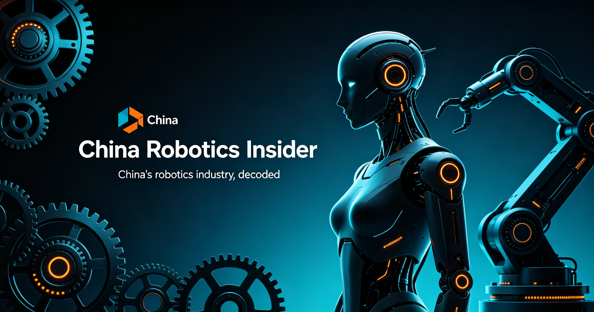

Sep 22, 2026 · Supply Chain

A Tesla Optimus team landed in Ningbo on Sep 16 and began mass-production audits on Sep 17, sweeping Ningbo, Hangzhou, Shanghai and Xiamen through October. Tuopu, Sanhua and Joyson — all existing Tesla auto suppliers — already hold orders; the round verifies line quality and consistency ahead of a planned ~50,000 units this year, targeting a ~$20,000 price point.
Sep 20, 2026 · Funding

Embodied-intelligence maker Genisom AI (智身科技) raised hundreds of millions of yuan in a Series B led by UAE investor Stone Venture. The company has now mass-produced 15,000+ units for power, petrochemical, firefighting and education scenarios, with annual output of its CHAMP joint modules above 1 million.
Sep 19, 2026 · Events

EngineAI's T800 humanoids debuted new moves — "carp kip-up", "dragon dodges" and aerial knee strikes — at the URKL robot fighting tour in Baoshan. The event sold out 5,000 seats and demonstrated fully autonomous multi-robot combat in front of thousands, a milestone for commercializing humanoid fighting as entertainment.
Sep 18, 2026 · Markets

The humanoid concept rallied on Sep 17 as Unitree's market value returned to ¥200B. Counterpoint data cited by Jiemian shows global humanoid shipments exceeded 22,000 units in H1 2026, up ~300% YoY — with all top-five vendors Chinese (AgiBot 9,700, Unitree 7,000, Galbot 1,100, UBTECH 1,000, Leju 650).
Sep 17, 2026 · Manufacturing

At the G9L launch, XPeng CEO He Xiaopeng announced the first automated production line for general-purpose humanoid robots is officially running in Guangzhou — a robot completed final assembly and walked off the line unassisted. XPeng said its first humanoid will be delivered in 2027 with 76 degrees of freedom.
Sep 16, 2026 · Deployments

AgiBot published real-world footage of its full-size Yuanzheng A3 Ultra working in car dealerships, hotels and convenience stores — multi-robot and human-robot collaboration in live operations. The company frames it as the first large-scale commercial deployment of a mass-produced full-size humanoid in real scenarios.
Sep 14, 2026 · Products

The upgraded G1+ adds a 2-DOF neck, 110% more shoulder/waist torque (with 72% less heat at equal torque), new vision and touch sensing, six-mic far-field voice and external power input for long shifts. Standard edition: ¥95,000 (~$13,400); EDU edition adds up to 25+45 DOF with optional dexterous hands.
Sep 14, 2026 · Companies

Xiaomi's founder toured Unitree's Hangzhou HQ with founder Wang Xingxing, watching martial-arts and calligraphy demos. Lei kicked a humanoid to test balance — it stepped back and held its ground. One robot also walked over to a Xiaomi Pengcheng N90 EV and waved. Shunwei Capital is an early Unitree backer.
Sep 12, 2026 · Manufacturing

UBTECH's 14,000 m² "super smart factory" in Liuzhou, co-built with Siemens Digital Industries, targets 10,000+ Walker S and Cruzr units a year, with its own Cruzr robots working the line. Shares rose 3%+ on Sep 14 as China's humanoid sector exits the prototype phase.
Sep 14, 2026 · Markets

FFIE will unveil and put on sale nine robot devices — humanoid, quadruped and wheeled-arm — plus K-12 education, research, security and inspection solutions, targeting a factory running this year and its first product off the line in Feb 2027. See our US-listed China robotics stocks guide.
Sep 14, 2026 · Companies
UBTECH (9880.HK) reported H1 2026 revenue of ¥1.27 billion (+104.2% YoY) and 16,123 humanoid robots sold (+268%). Its UWORLD U1 consumer humanoid (11.98万–99万 yuan) has accumulated 13,361 orders across channels, with deliveries starting Sep 16.
Sep 14, 2026 · Markets
Unitree (688836.SH) opened its A-share IPO on Aug 19 at 1,100 yuan (+629% vs the 150.80 yuan offer) for a ¥444.9B peak valuation, then fell below 550 yuan by Sep 2 and under 500 yuan by Sep 14 — roughly 55% off the peak, a cautionary tale for robot-stock valuations everywhere.
Aug 25, 2026 · Events

Beijing's “Tiangong” humanoid clocked 8.86 seconds in the 100-metre sprint at the World Humanoid Robot Games in Beijing — beating the human men's world record — in a games that drew global attention to China's robot athletics.
Aug 25, 2026 · Events

At the second World Humanoid Robot Games (Aug 22–26), humanoid robots broke human records on the track — a striking leap from last year, when viral clips showed robots freezing at the starting line or veering off course.
Aug 26, 2026 · Products

Galaxy General’s humanoid played tennis with former pro Zheng Jie at the games’ opening. Founder Wang He says the robot can serve, return, save and lob — and it gets back up on its own after falling.
Aug 21, 2026 · Events

With 300+ exhibitors and 150+ new products, the 2026 World Robot Conference in Beijing showcased the industry’s momentum. Galaxy General debuted its bipedal Galbot ET1 humanoid and its self-developed “Galaxy Brain” embodied foundation model.
Aug 21, 2026 · Industry

In the first half of 2026, China’s humanoid robot shipments accounted for 97 percent of the global total, according to a report covered by CCTV+, which also highlighted China’s push on standards, talent, cooperation and innovation infrastructure.
Aug 25, 2026 · Companies

Unitree’s revenue neared 1.7 billion yuan in 2025 and reached ~1.15 billion yuan in H1 2026, up 48.5% year on year — with the company vertically integrating motors, reducers, controllers and LiDAR in-house.
Aug 23, 2026 · Deployments

Use cases are expanding into emergency response, household services, industrial production and pharma logistics — including the LINGLOONG v2.0, described as the world’s first firefighting humanoid robot.